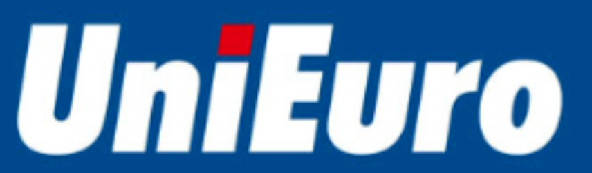

대표 로고대표 브랜드 마크
대표 로고대표 브랜드 마크우니에우로 Unieuro
우니에우로(Unieuro)는 이탈리아의 가전·전자제품 양판점 체인으로 현재 Fnac Darty 그룹에 속한다.
최종 업데이트
우니에우로는 어떤 브랜드인가
우니에우로(Unieuro)는 매장 수 기준 이탈리아 최대의 가전·소비자 전자제품 소매 체인이다. 뿌리는 1937년 브리지겔라에서 비토리오 실베스트리니가 연 첫 상점으로 거슬러 올라가지만, 상호 자체는 1967년 쿠네오주 알바에서 파올로 파리네티가 창고형 매장에 붙인 이름에서 비롯됐다.
두 번의 결정적 전환점은 2017년 밀라노 증시 STAR 부문 상장과 2025년 초 프랑스 프낙다티(Fnac Darty) 그룹 편입이다. 본사는 포를리에 있으며 약 270개 직영점과 약 240개 가맹점, 5,400여 명의 인력, 연 30억 유로 안팎의 매출을 갖춘 전국 단위 옴니채널 사업자다.
우니에우로는 어떻게 봐야 할까
이 브랜드를 읽는 핵심은 '통합'이다. 두 가지 통합이 겹친다.
첫째는 오프라인과 온라인의 통합이다. 270개 직영점과 디지털 플랫폼을 한 몸처럼 묶어, 온라인 주문 후 매장 수령(클릭앤컬렉트·페이앤컬렉트)을 전국 매장의 약 90%인 400여 거점에서 제공한다.
2024년 온라인 매출은 16% 늘어 전체의 약 32%까지 올라, 전통 소매의 매장 자산을 디지털 성장의 발판으로 전환하는 데 성공했다. 둘째는 자본 통합이다.
2025년 프낙다티 편입으로 이탈리아 1위 사업자가 서·남유럽 매출 100억 유로, 매장 1,500개 이상, 인력 3만 명 규모의 범유럽 연합에 합류했다. 한국 독자에게 이 사례는 하이마트·전자랜드가 겪은 온라인 침투와 구조 재편의 유럽판으로 읽힌다.
프낙다티 자체가 2026년 크레틴스키의 EP그룹 인수 제안 대상이 되면서, 한 차례 통합이 끝나기도 전에 상위 지배구조가 다시 흔들리는 연쇄 재편의 한가운데에 있다는 점이 가장 주목할 함의다.
우니에우로는 어떻게 시작되고 성장했나
전후 이탈리아의 가전 보급기가 출발 무대였다. 1937년 비토리오 실베스트리니는 라벤나 인근 브리지겔라에서 가스오븐·장작난로·라디오·재봉틀을 파는 상점을 열며 가정용 기기 소매의 씨앗을 뿌렸다.
상호의 직접 기원은 1967년이다. 쿠네오주 알바에서 파올로 파리네티(이탈리 창업자 오스카 파리네티의 부친)가 의류·침구를 취급하는 창고형 매장을 열며, 곧 유럽이 하나의 거대한 단일 시장으로 통합되리라는 기대를 담아 유럽 통합론자 알티에로 스피넬리를 기려 우니에우로라 명명했다.
첫 번째 전환점은 1980년 세대교체로, 주세페·마리아 그라치아 실베스트리니가 이끄는 SGM 디스트리부치오네(현 우니에우로)가 설립됐다. 두 번째는 1986년으로, 가정용품과 가전만을 전담하는 첫 대형 매장 네 곳이 문을 열며 종합 잡화에서 전자제품 전문 소매로 사업 축을 옮겼다.
1970년대 초 카탈로그 판매로 가전을 도입한 이래, 인수·합병과 가맹 확장을 거쳐 전국망을 구축했다.
우니에우로의 브랜드 아이덴티티는 무엇인가
브랜드 가치는 친밀함, 헌신, 열정으로 요약된다. 2014년 리브랜딩은 그 정수를 압축한 작업이었다.
비주얼 아이덴티티의 중심은 파란 바탕 위에 놓인 주황색 소문자 u로, 하트 모양으로 변형해 심장 박동과 따뜻함을 동시에 담았다. 같은 해 도입한 페이오프 'Batte.
Forte. Sempre.'(뛴다.
언제나.)는 심장이 뛴다는 뜻과 경쟁자를 이긴다는 중의를 겹쳐, 고객이 원하는 때와 장소에 늘 곁에 있겠다는 약속을 담는다. 타깃은 기술과 가전을 일상에서 다루는 이탈리아 대중 소비층 전반이며, 보이스는 따뜻하면서도 활기차고 직설적이다.
블랙프라이데이를 친환경적으로 재해석하는 등 공익적 메시지를 광고에 얹는 기조도 두드러진다.
우니에우로의 대표 제품과 서비스는 무엇인가
취급 품목은 TV·오디오 같은 소비자 전자제품, 대형·소형 가전, 컴퓨팅·모바일·통신 기기, 사진·게임·액세서리, 설치·보증·홈케어 서비스까지 폭넓다. 매장 포맷은 평균 약 1,500㎡로 쇼핑몰 입점형, 독립 단독형, 리테일 파크형으로 나뉘며, 도심 소형 점포는 우니에우로 시티 간판을 쓴다.
채널은 직영점, 가맹점, 디지털 플랫폼이 클릭앤컬렉트로 맞물리는 옴니채널 구조이며, 대형 하이퍼마켓 내 숍인숍과 주요 철도·지하철역 거점 판매까지 확장돼 있다.
우니에우로는 지금 어떤 상태인가
본사는 이탈리아 포를리에 위치하며, 중앙 물류는 피아첸차, 지원 허브는 카리니와 콜레페로에 둔다. 지배구조는 2025년 1월 프낙다티 그룹 편입으로 전환됐다.
공개매수 대가는 보통주 1주당 현금 9유로와 신주 프낙 주식 0.1주였고, 2025년 1월 8일 밀라노 증시에서 상장폐지됐다. 이로써 우니에우로는 비상장 자회사가 됐다.
매출은 연 30억 유로 안팎(2024 회계연도 상반기 약 11억 5천만 유로) 규모로 보고됐다. 한편 모회사 프낙다티는 2026년 다니엘 크레틴스키의 EP그룹으로부터 주당 36유로 현금 공개매수 제안을 받아 이사회 찬성 의견이 나온 상태로, 최종 종결은 2026년 하반기로 예상된다.
현재 인력은 약 5,400명이며, 그 외 미확정 세부 수치는 미공개.
우니에우로 로고는 어떻게 변해왔나
대표 로고대표 브랜드 마크
대표 로고 1보관 이미지 1자주 묻는 질문
우니에우로는 어느 나라 브랜드인가요?
우니에우로는 이탈리아의 리테일·커머스 브랜드입니다.
우니에우로는 언제 설립되었나요?
우니에우로는 1967년 설립되었습니다.
우니에우로의 브랜드 아이덴티티는 무엇인가요?
브랜드 가치는 친밀함, 헌신, 열정으로 요약된다.
우니에우로의 대표 제품은 무엇인가요?
취급 품목은 TV·오디오 같은 소비자 전자제품, 대형·소형 가전, 컴퓨팅·모바일·통신 기기, 사진·게임·액세서리, 설치·보증·홈케어 서비스까지 폭넓다.
우니에우로의 본사는 어디에 있나요?
본사는 이탈리아 포를리에 위치하며, 중앙 물류는 피아첸차, 지원 허브는 카리니와 콜레페로에 둔다.
우니에우로의 창업자는 누구인가요?
우니에우로의 창업자는 Paolo Farinetti입니다(위키데이터 기준).
우니에우로의 공식 웹사이트는 어디인가요?
우니에우로의 공식 웹사이트는 https://www.unieuro.it/ 입니다.
출처와 검증
우니에우로 관련 참고: 공식 웹사이트 · 위키데이터 Q4004687 · 영어 위키백과. 브랜드명은 한글과 원어를 함께 표기하되 데이터에 없는 표기는 만들지 않습니다. 기원 국가·설립연도는 검수된 정의문에서 확인된 값을 우선하고, 없을 때만 공식 웹사이트 URL이 일치하는 위키데이터 개체의 값을 씁니다. 위키데이터 값은 2026-09-07 기준입니다.